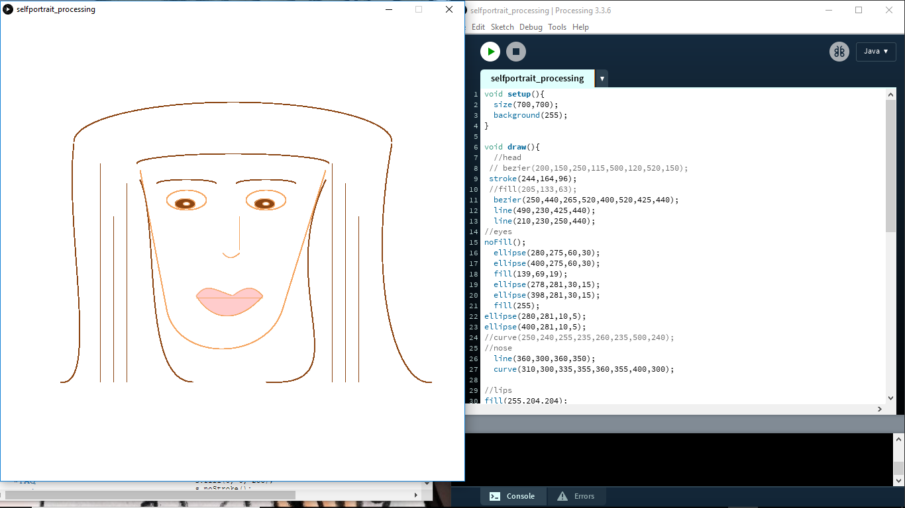

In this video my baby sister Mariajose is trying to create her own youtube show. She gets her influnces from watching youtube family shows were they play games and open new toys.
In No More Books! I am projecting my video onto a bookscase. I want the video to portray the loss of use of books. It was interesing how after developing my video and installing the meaning changes compared through just a projection.
This is a critical interactivity in which the unexpected happens. In is a deveopment from an older project that I did for sound art. I wanted the viewer to experice the unexpected and get surprised. clickhere
To go to Tommy's World click here. Tommy's World is about something so simple can look so complicated. I want the viewer to feel the stress of complexity and find the solotuion to how simple things can be.

Photoshop

Illustrator

Glitch

mashup
self portrait
Net Art
video sound art
code as art